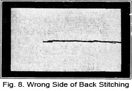

1928—The New-Way Course in Millinery and Hat Design
Lesson 2—Stitches Used in Millinery
Stitches Used in Hat-Making
There are certain stitches familiarly identified with millinery—stitches that are used in the construction or composition of hats. Many of these stitches are used in dressmaking also, but some are confined exclusively to millinery—are, indeed, known as millinery stitches. Before even thinking of making a hat, you must know all these stitches perfectly, how to make them and when to use them.
In this lesson you are going to be taught how to make the essential millinery stitches. The process of making each stitch is reduced to a series of steps which should be very simple to follow. Do not merely read the directions. Follow them. Make the stitches while you study how to make them. And be sure that you do not proceed to a new stitch until the one before is perfectly mastered.
In millinery the running stitch is a most useful and practical stitch. It is used for joining seams in materials where machine stitching would not be appropriate. For instance, velvet should not be stitched on the machine as the machine feed leaves a bad mark next to the stitching. On the other hand, there are certain very thin, fine materials that draw and pucker up under the foot when sewed on the machine. Thus, for materials of this kind the running stitch is used in making seams.
The running stitch is also used for shirring. Several rows of the stitches are made the required distance from each other. The lines of stitching must be perfectly straight. Heavy materials, such as velvet, should be shirred on the wrong side so that the long stitches will be on the right side and the short ones on the wrong side. The pile of the velvet will completely cover the long stitches. You will find that it is not possible to shirr velvet with stitches of even, short length as the pile prevents the drawing up of the material.
If you want to shirr material for use in hat-making, gauge the amount of material needed in this manner. First measure the space to be covered by the shirred material. Allow two and one-half times this length. This will give you the entire amount of material needed. For instance, if the space to be covered with shirring is twenty inches long, twenty times two and one-half equals fifty inches. You will require fifty inches of material.
The Running Stitch
Now that you know the uses of the running stitch, and its value in hat-making, let us see exactly how this stitch is made. Remember, you have only to follow the steps in their correct order, and actually work out each step with needle, thread and material, to master the making of the stitch.
1. Select a needle and thread as fine as your material will allow.
2. Fasten the thread with several small back stitches. Do not knot the end of the thread. Back stitches are merely small running stitches taken over each other.
3. Now take a small stitch, passing the needle under as few of the material threads as possible.
4. Proceed to take several of these small stitches on your needle, being sure they are all uniform in size.
5. Draw the needle through. Continue in this manner until the complete length of the material is covered.
6. In order to secure the ends of the threads and still allow ends long enough to extend the shirring if necessary, wrap the ends of the threads around a pin as shown in Fig. 2.
The running stitch may seem simple to you—and it is simple. But it is only with long practice that the fingers become deft and quick. Cleverness with the needle is not a "talent" as some people would have us believe. It is the logical sequence to practice and patience. Even though this first stitch may seem simple to you, practice it thoroughly—and then proceed with the second stitch used in millinery.
The Uneven Basting Stitch
When bindings are to be sewed on buckram shapes, when braids are to be sewed on foundations, and in many other similar cases, uneven basting is used. If you have ever sewed before you know that uneven basting is as simple a stitch as the running stitch, but that it has many practical purposes.
When making uneven basting stitches, one stitch is usually about one-eighth of an inch long and the next is from one-half to three-quarters of an inch long. The length of the stitches, however, depends entirely upon the material and the position. The purpose also determines the size of the stitch.
The end of the thread is always knotted in uneven basting. This knot should be just large enough to prevent the thread from pulling through the material, yet small enough to be entirely invisible when the hat covering is pressed over it. If it is used as a permanent stitch, basting is covered. But very often it is used merely as a temporary stitch to hold the edges of a seam or hem together until the final stitching is applied.
When uneven basting is applied to the brim of a hat or any other place where the material is stiff, the needle must pass through the material straight up and down. If the basting is used on a curved surface, the long stitch should be on the upper part of the curved surface so that the thread will lie flat against the curve.
The method of making the uneven basting stitch follows. Be sure to study the directions carefully and to carry them out on samples of material.
1. Begin at the right side of the work and pass the needle through the material from the upper to the under side.
2. Take a short stitch on the under side of the material, bringing the needle to the upper side at a point from one-eighth to one-fourth of an inch from the place the needle first passed through to the under side.
3. Continue in this manner, making first a short and then a long stitch.
Even Basting
This is a different type of basting, and is used almost invariably for marking purposes. When you have mastered the uneven basting stitch, you will have no trouble making this one.
1. The end of the thread should be knotted.
2. Begin at the right side of the work and pass the needle through the material from the upper side. Take a stitch underneath, making it the exact length you want all succeeding stitches to be. The size of the stitch depends largely upon the material, place and purpose.
3. Now place the needle through the material again, the distance between the stitches being identical with the length of the stitch. Proceed to make stitches of even length in this manner until the work is completed.
4. Even basting is sometimes used to sew binding to hat shapes. In this case the needle passes straight thru the buckram and facing material from the under to the upper side then straight thru again from upper to under side.
Back Stitch
Where a stitch of strength is needed, the back stitch is especially appropriate. It is very useful in making seams in velvet, silk or satin, and also for attaching certain kinds of trimmings. Sometimes a combination of the running and back stitch is used when strength is needed but when continual back stitches would not be necessary. A seam made completely with back stitches closely resembles machine stitching when finished.
1. First thread your needle and make a small knot at the end of the thread.
2. Begin at the upper or right hand end of the work and bring the needle from the under to the upper side of the material.
3. Now take a small stitch backward on the upper side and one twice its length on the under side of the material. The needle will emerge at a distance exactly one stitch in advance of the stitch on the upper side.
4. Insert the needle where the thread was brought up before, make another back stitch, and continue the entire length to be covered. Fig. 7 shows the right side of back stitching and Fig. 8 shows the wrong side of this stitch.
Stab Stitch
This type of stitch is distinctly a millinery stitch. It is used in sewing heavy fabric such as buckram. One of its most useful purposes is attaching feathers, flowers and other heavy trimmings.
1. Bring up the needle from the under side straight through the material. Draw the thread through.
2. Now push the needle straight through to the wrong side of the material, drawing the thread until the stitch on the right side is tight and firm. Both these strokes must be taken to complete the stitch. It may be made any length to suit the need.
Blind Stitch
You will find many occasions to use the blind stitch—a stitch which is also used quite extensively in dressmaking. It is used where no stitch is to show on either side, and its most appropriate uses are for hems, trimmings and bias bands or folds.
In practicing the blind stitch, bear in mind that the most important thing is neatness. Practice until you can make perfect blind-stitching—for the practice will not only enable you to make this stitch perfectly but will give a deftness to your fingers that will prove extremely valuable in your millinery work.
1. The thread should be fastened under the turned edge of the fold or hem, with a back stitch. In fastening it in this manner, bring the needle through the crease of the turning and take up one or two threads of the material under the hem.
2. Now take three or four fine running stitches on the turned under portion of the hem. Bring the needle out through the turned edge and continue.
3. There should be no stitches showing, except those tiny stitches on the right side where the threads have been taken up to hold the hem.
The Catch Stitch
You will find the catch stitch useful in holding down hems on material that does not fray badly, or where two turnings are not desirable. Very often this type of stitch is used for decoration, or ornamentation, too. When neatly made it looks very pretty and often makes a most pleasing trimming where any other type of trimming would be inappropriate.
1. Always work from left to right when making the catch stitch. The point of the needle should be to the left. Begin at the left of the work, taking the first stitch in the foundation.
2. Proceed to bring the thread to the right side of the work, carrying the thread downward and to the right, taking a small straight stitch with the needle pointing to the left.
3. Now carry the thread diagonally upward to the right and with the needle pointing to the left take another short straight stitch.
4. Continue in this manner until the work is finished, being careful that the stitching forms a straight, even band when finished.
You probably have many little scraps of material in your sewing room. Utilize these scraps for practice work. And remember throughout your millinery work that your motto is "Practice makes perfect"!
Overcasting Stitch
In millinery, the overcasting stitch serves two purposes. When silk floss, yarn or similar thread is used, the overcasting makes a neat, attractive finish on edges. When selvedges are to be joined, when seams are to be finished, overcasting is a staunch, dependable stitch. It is also valuable in sewing wire on the edges of brims and crowns.
Bear in mind that overcasting must always be suitable to the material and purpose. The stitches are always made in the same way, but their length may vary. If you wish to use overcasting as ornamentation, the stitches may be further apart than ordinarily; and the design may be enhanced by making the stitches of different lengths, such as two long ones and one short one. If you wish to use overcasting to join two edges, proceed in this manner.
1. Holding the work lightly between the thumb and fingers, pass the needle through the edges.
2. Draw the thread across the top, being sure that the edges are held even. This makes your first stitch.
3. Now insert the needle once again through the edges, taking another stitch identical with the one just taken. It is important that the stitches are small and fine, but be careful not to draw them too tightly.
4. The overcast stitch is used to hold the wire at the edge of a hat brim in place as shown in Fig. 12.
Sliding Stitch
You will probably find many occasions to use the sliding stitch in millinery. It is really an "emergency" stitch and is used to fasten thread where it would be impossible to take a stitch.
To make the stitch, form a loop and slide it along the thread, drawing the loop tight at the surface of the material and the thread will be fastened securely. The needle is not passed back through the material.
Buttonhole Stitch
When used as a trimming, the buttonhole stitch is sometimes called the Blanket Stitch. It offers a most pleasing finishing touch to edges, especially when the stitches are grouped in various lengths.
More often, though, the buttonhole stitch is used in millinery to finish edges securely, to fasten wires, to apply linings, etc. Sometimes it is used in applique work. Find some scraps of material in your sewing basket, and proceed to practice the buttonhole stitch in this manner.
1. Begin at the right hand side of the work, about an eighth of an inch from the edge. Hold the thread down against the material with the thumb.
2. Draw the needle through under the edge of the material, forming a loop. Draw the thread through this loop.
3. Now place the needle a little distance from the first stitch, and bring it through the loop once again. Continue the entire length of the material.
Practice the buttonhole stitch both for ornamentation and seaming. It is a mistake to proceed to the next stitch until you have mastered this one perfectly.
Slip Stitch
Because it so successfully conceals any evidence of stitching, the slip stitch is a valuable aid in joining turned edges at some conspicuous point. This stitch is very much like the blind stitch except that the stitch taken in the fold of the goods is longer than in the blind stitch. You will find many occasions to use it in millinery.
1. First place the turned edges together. Insert the needle under the turned edge and bring it through.
2. Now bring the needle over to the opposite piece of material and take a stitch about one-quarter of an inch in length along the inside of the fold.
3. Once again cross over to the first fold, taking a stitch through the turned edge. Proceed in this manner, drawing the thread tight enough to hold the edges firmly. But be careful that the seam does not present a drawn appearance, as this makes the work appear careless and untidy.
Tie Stitch
Use the tie stitch wherever one stitch is needed to fasten flowers, feathers or other trimmings in place. It is a very simple stitch, made exactly as the stab stitch is made. But the ends of the thread are tied together on the wrong side.
Wherever great strength is needed, such as holding a jet ornament in place, use double thread.
Saddlers Stitch
There are many uses for the Saddlers Stitch, but most important among them is for sewing material over wire to finish the outer edge of the brim or crown. It is very important that this stitch be practiced until it is mastered, as you will find that you must use this stitch a great deal later when you begin to make charming little hats. And surely you will not want to refer to these early lessons each time a step must be made!
1. Take one piece of thread and two needles. Thread each end of the thread into a needle.
2. Place the wire under the material and pin in position.
3. Now push one needle through the material under the wire and draw about one half of the thread through.
4. Proceed to push the other needle through the material under the wire, and when about half-way through, push the other needle through the material directly past the first needle. This will make a stitch on both sides of the material.
Make your stitches of the same length. They will hold the wire firmly in place, and when the thread is drawn through, a cord will be formed. There is another stitch that is sometimes called the Saddlers stitch, and which is used when folds are made in holding edges together. To make this stitch proceed in this manner, following the steps carefully.
1. Cut the fold, and turn the edges to the wrong side. Make the fold the width desired.
2. Place the needle under the turned edge of the fold and draw through the material to the right side.
3. Now insert the needle beneath the edge of the opposite edge of the fold and draw through in the same way.
4. Continue sewing toward the left, placing the stitches at an angle and lacing the edges together evenly. No stitches should be visible on the right side.
Still another stitch that may be classed under the Saddlers Stitch is called the Lacing Stitch. A small running stitch is first made on one edge and then the other of the fold, holding both edges firmly together. It is important, in making this stitch, that small, fine stitches be taken otherwise the edges will not be held together as they should.
This completes the first essential stitches used in millinery. You see there are not very many, and they are not difficult. Make up your mind to master them now, before you begin the next lesson, and determine that you will not have to refer to this lesson again. In millinery, stitching is extremely important, perhaps even more so than in dressmaking, for a wrong stitch in the wrong place can completely mar the most attractively styled hat. Workmanship is of primary importance; style and trimming are secondary.
Review this lesson on stitches before beginning the next one. Be sure that you can make perfect samples of each stitch—and when you can, begin the lesson on materials.
LESSON 2
QUESTIONS
1. Why is the back stitch so appropriate in millinery work?
2. Where is the stab stitch used?
3. Where is the blind stitch used?
4. Where is the catch stitch used?
5. Where is the saddlers stitch used?